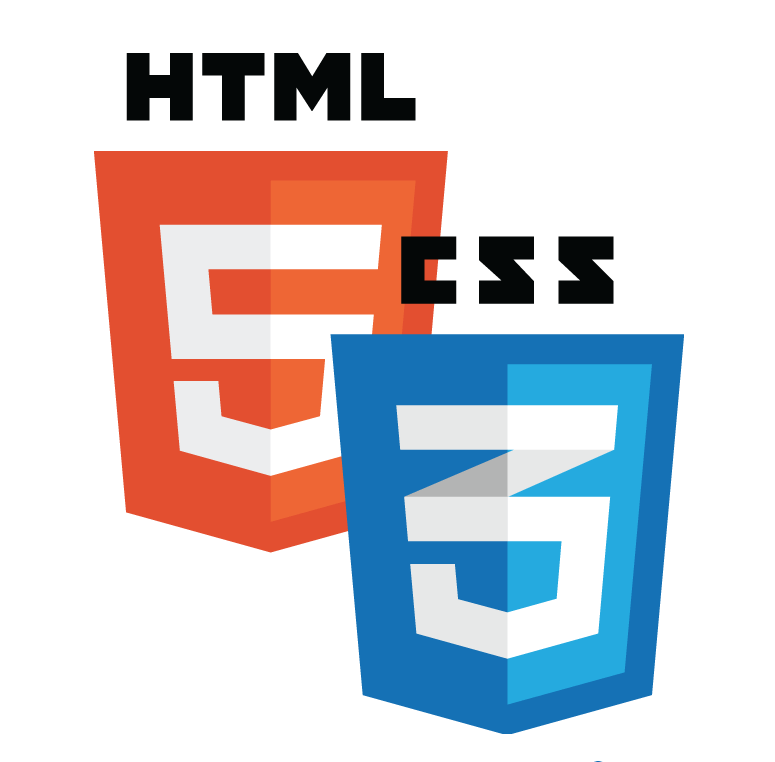
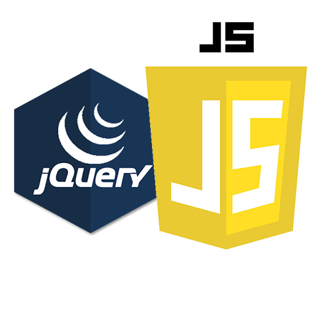
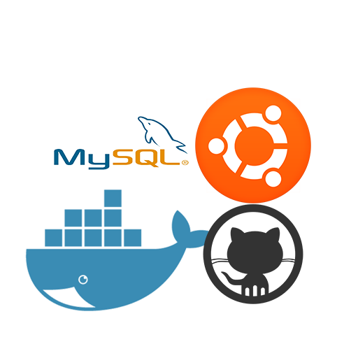

PROFILE
柿崎卓


経歴
○1996年生まれ。秋田県出身
○秋田県立増田高等学校 総合学科 理数系卒業（～2012.03）
○秋田県立秋田技術専門学校 自動車整備科卒業（～2017.03）
○秋田スズキ入社 スズキアリーナ横手店に務める（～2018.04）自動車の整備や点検、リコール作業などを行った。
○JA全農北日本くみあい飼料株式会社入社 秋田横手農場に努める（～2023.03）肉豚の成育（子豚を導入し出荷するまで）出荷、農場環境の整備、農場運営の補佐を行った
○インターネット・アカデミーIoTエンジニア育成Bコース受講（2022.10～）
趣味・好きな事
イラスト ペットと遊ぶこと Youtube鑑賞
最近は家での自重トレーニングにハマっている
WORKS
WEBAPP
かんたんSNS いいね機能やコメント機能、タグ検索機能などを備えた簡単なSNS風アプリ
製作期間：約２ヶ月
使用したツール・言語・開発環境
Laravel10/HTML/CSS/PHP/GitHub/SendGrid/Heroku/MySQL/Docker/Linux/
フルスタック開発の経験を詰むために、LaravelとDockerを使ってSNSアプリを構築しました。アプリケーションはUbuntu環境で開発され、コードのバージョン管理にはGitHubを利用しました。データベースとしてMySQLを採用し、アプリケーションのホスティングにはHerokuを使用しました。さらに、AWS S3を活用してアプリケーション内の画像保存を行っています。開発環境の構築とコードの編集には、VSCodeを主に使用しています。
Vtuber相性診断 ユーザーの誕生日と血液型を元に、オリジナルのロジックで相性診断を行うWEBアプリ
製作期間：約１週間
使用したツール・言語・開発環境
Laravel10/HTML/CSS/PHP/GitHub/Heroku/MySQL/Docker/Linux/
ユーザーと相性の良い人物を診断するためのアプリケーションです。ユーザーはログインし、自身の誕生日と血液型を入力します。この情報は、私が開発したオリジナルのロジックに基づいて相性診断を行います。アプリケーションはLaravelとDockerを使用して構築し、コードのバージョン管理にはGitHubを使用しました。MySQLをデータベースとして使用し、Herokuでホスティングしています。VSCodeを主に使用して開発環境を構築し、コードの編集を行いました。
WEBSITE
ポートフォリオウェブサイト 海をテーマにした体験型ウェブサイト
製作期間：約1ヶ月
使用したツール・言語・開発環境
HTML/CSS/JavaScript/jQuery/GitHub/Vscode/Windows/
このウェブサイトは、Windows環境上でGitHubを活用しながら開発しました。ユーザーが海中にいるかのような爽快な体験を提供することを目指し、視覚的な要素とアニメーションに重点を置きました。サイトはHTML、CSS、JavaScript、およびjQueryを使用して構築され、ソースコードはGitHubで管理されました。サイトのデプロイにはGitHub Pagesを使用し、開発とコード編集には主にVSCodeを使用しました。
SKILLS
-

HTML/CSS レスポンシブなウェブサイトの設計と構築に対応。要素の配置やスタイリングを網羅。自己紹介サイトをゼロから構築。基本のHTMLとCSSの知識を持っています。
使用エディタ：Visual Studio Code -
PHP/Laravel Laravelを使用し、SNSアプリと占いアプリを作成。オブジェクト指向の開発とMVCモデルの理解に基づく独自のロジックを組み込み。基本のPHPの知識を持っています。
使用エディタ：Visual Studio Code -

JavaScript/jQuery 自己紹介サイトでJavaScriptとjQueryを使用し、動的要素をウェブページに導入。基本的なJavaScriptの知識を持っています。
使用エディタ：Visual Studio Code -

docker/ubutu/mysql/github DockerとUbuntuを使用し、一貫した開発環境を構築。MySQLでデータ管理を行い、GitHubを用いてバージョン管理とコード共有を実施。これらの技術は全てのwebアプリの開発プロジェクトに使用。
使用エディタ：Visual Studio Code -
Amazon S3/Heroku/SendGrid Amazon S3を利用して安全な画像ストレージを提供し、Herokuでアプリケーションをデプロイ。SendGridを用いてユーザー登録時の確認メールの自動送信を実装。